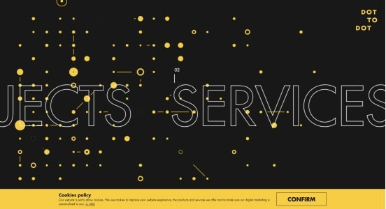
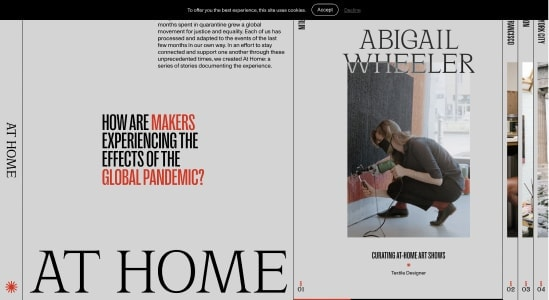

2차 리서치(04.18)
참고 레퍼런스 |
|
| <링크> apple 이왕 세로로 스크롤 할 거 애플스타일로 하자 (1순위) |
|
| <링크> spotify_artist 효과가 많아 많은 사람들의 눈을 사로잡을 것 같음 |
|
| <링크> background-attachment를 활용한다면 이렇게 |
|
| <링크> 글씨 움직이는 중 |
|
| <링크> 비눗방울은 3D인가요? |
|
홈페이지 로딩할 때 앞쪽에 나올 이미지 참조 |
|
| <링크> 로딩 화면이 너무너무 깔끔 안에 내용은 X |
|
구성 |
|

|
<링크> 너무너무 깔끔한 3D 이런 깔끔한 거 좋은 듯 |
1차. 리서치(04.15)
가장 괜찮은 디자인<링크> 이러한 레퍼가 더 필요함 |
|
| 서서히 올라오는 것울 가로로 하고 싶음 어떻게 하는지 알아보기 |
|
| 전체적인 구성은 세로로 스크롤이 되다가 가로로 스크롤이 되고 그런식 | |
푸터스타일 |
|
| <링크> 마우스 오버 전 누워있는 명함 오버하면 똑바로 세워져서 귀여움 |
|
WEB GL 또는 3D구현하면 프리패스 |
|
| <링크> 한국사람 포트폴리오, 눈이 사라짐 |
|
| 링크 가장 구현하고 싶은 3D 효과 |
|
비슷비슷한 디자인세로스크롤이 더 나음, 디자인 자신이 없다면 생각보다 결과물이 좋지 않음 |
|
| <링크> 캠핑차타고 옆으로 감 |
|
|  | <링크> 옆으로 가는게 디폴트 값 |
|  | <링크> 신문처럼 옆으로 넘김 |